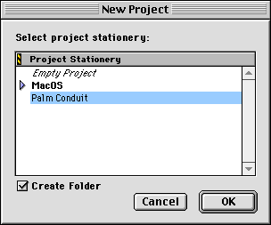
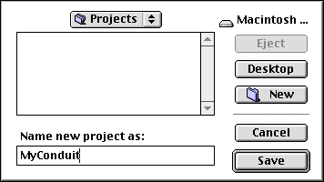
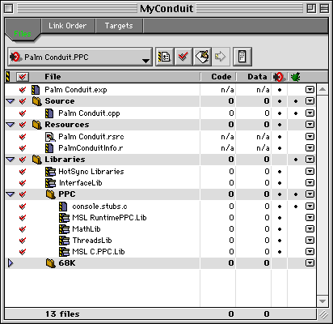

|
|
|
C/C++ Sync Suite Companion for Macintosh Palm OS® Conduit Development Kit for Macintosh, Version 4.03 Conduit Creation Fast Track Steps A. Install Conduit Development Tools B. Create a New Conduit Project D. Customize the Conduit Information Resource |
This chapter provides a quick start guide to developing conduits with the Conduit Development Kit, without attempting to explain the conceptual underpinnings. You can use this guide if you are already familiar with programming for the Palm OS® platform and how to use HotSync® technology. A conduit is a Code Fragment Manager plug-in module that provides a translation bridge between a Palm Powered™ handheld application and a particular desktop application. You create conduits using the Metrowerks CodeWarrior development environment. You must also have a Palm Powered handheld available for testing your conduit. For more information about developing a conduit, see the other chapters in this book. For information about the Sync Manager API and the conduit entry points, see the Conduit Developer Reference. Conduit Creation Fast Track StepsFollow the five steps listed here to quickly create a functional conduit. A. Install Conduit Development ToolsYou need to perform the following installations on your Macintosh desktop computer: 1. Install Metrowerks CodeWarrior. You can use Metrowerks CodeWarrior Release 7.2 for Macintosh to develop conduits with this kit. 2. Install the Conduit Development Kit (the CDK). NOTE: You can use the CDK regardless of whether the Palm Desktop software is installed on your Macintosh. B. Create a New Conduit ProjectWhen you install the Conduit Development Kit, the conduit stationery is added to your Metrowerks installation. To use the stationery, follow these steps: 1. Select New from the File menu, click on the Projects tab, and select the Palm Conduit stationery, as shown in Figure 1.1. Figure 1.1 Using the conduit stationery

2. Name your project and specify the folder in which you want it saved, as shown in Figure 1.2. Figure 1.2 Naming your project

3. Press the Save button to create your project. Metrowerks displays the project window with your newly created conduit files, as shown in Figure 1.3. Figure 1.3 The conduit project window

C. Take a Trial RunTest drive your conduit shell to verify that you can build and install it, and that the HotSync Manager application can run it: 1. Select Make from the CodeWarrior Project menu to build a release version of the conduit generated from the stationery without making any changes to the project or source files. 2. You may need to drag your conduit executable into the Conduits folder in the Palm folder on your system, as described in the following note. IMPORTANT: When the HotSync Manager application performs a synchronization, it runs each conduit in the Conduits folders under each of the supported domains. See "Conduit Domains" for details. When you build a conduit using one of the projects supplied with the CDK, your conduit executable is stored in the Conduits folder contained within the CDK directory tree, not in the Conduits folder of the Palm Desktop software, of the CDK's HotSync folder. The conduits that you build will only run during a HotSync operation if they are located in the correct folder. The CDK installer places an alias to the CDK target build folder into the system conduit folder, so that build conduits will be found by the HotSync Manager. This is a development configuration only. If you have not installed the Palm Desktop software, this isn't an issue: your conduits will automatically run when you press the HotSync button on your cradle, provided that you have started the Transport Monitor. 3. Run your conduit by performing a standard synchronization operation. Check the log file to verify that your conduit ran properly. D. Customize the Conduit Information ResourceThe conduit stationery provides a default version of the conduit information ('CInf') resource. You need to modify some of the fields in this resource for your conduit: 1. Change the name and version number of your conduit, if required. 2. Change the creator ID for your conduit to the creator ID that you have obtained from PalmSource, Inc. The creator ID must be unique in order for synchronization to run properly. 3. Change the user interface field to match your configuration code: – if you provide a modal dialog box in your ConfigureConduit function, set this field to wantsUserInterface. – if you do not provide a modal dialog box, set this field to doesntWantUserInterface. 4. Change the names of the handheld and desktop computer databases to the ones used by your conduit. For more information about the conduit information resource, see Chapter 9, "Installing Conduits." E. Customize the Conduit Entry PointsThe conduit stationery provides simple implementations of the conduit entry point functions. You need to add code to several of these functions: 1. Add code to the GetActionString function to return the string that the HotSync Manager application displays in the "Next HotSync action" field of the Actions dialog box. 2. If your conduit provides a user interface, you need to add code that displays and handles a modal dialog box in your conduit's ConfigureConduit function. The template conduit program includes a model implementation of the ConfigureConduit function. Note that you must change the user interface flag in your 'CInf' resource to doesntWantUserInterface if you do not provide a dialog box and to wantsUserInterface if you do provide a dialog box. 3. You need to add code to the OpenConduit entry point, which is where the interesting work of your conduit is done. The HotSync Manager application calls this entry point to have your conduit exchange data between the desktop computer and handheld. Use the Sync Manager API functions in your OpenConduit implementation. Most conduits perform steps such as the following: a. Open the database on the handheld and open the data source on the desktop computer. b. Use the Sync Manager API to read data from the handheld, and use the desktop application's native API to read data from the desktop data source. c. Exchange or synchronize the data as required. d. Write the resulting data back to the handheld database and desktop data source. e. Clear the handheld's record status flags. f. Close the handheld database and the desktop data source. The Generic Conduit test conduit source code included with the CDK includes multiple targets in its project file. You can choose to build either a bundled or non-bundled version of the conduit by simply choosing the appropriate target ("GenericConduit(bundle)" or "GenericConduit") before building. The Generic Conduit provides an examples of OpenConduit and OpenConduitCarbon implementations that instantiates and passes control to a CSynchronizer object. The template conduit program includes an example of the OpenConduit function that calls Sync Manager API functions. For debugging and troubleshooting assistance, see Chapter 10, "Debugging Conduits." For more information about the conduit entry points, see Chapter 1, "Conduit API," in the C/C++ Sync Suite Reference for Macintosh, or Chapter 7, "Interfacing with the HotSync Manager Application." Conduit Design GoalsHotSync technology has been a very important part of the success of the Palm OS platform. One of the reasons for this is that the conduits called by the HotSync Manager application run quickly and adhere to a strong set of design goals. You need to develop your conduit with these same goals in mind, as described in Table 1.1. |
|
|